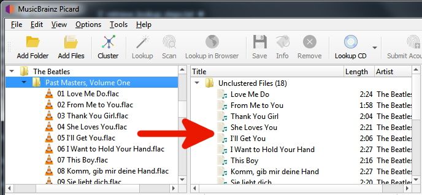

Lookup Files
The steps to follow to lookup files are:
Add your files using or . For ease of use it is recommended to use the internal File Browser to manage file system interactions. This is enabled from .

Drag the selected directory or files to the “Unclustered Files” folder, and wait for Picard to process the files - the names will turn from grey to black.
Use to group the files into album clusters.
Select a clustered album and use to lookup the cluster. Depending on your previous metadata, the album will show up in the right-hand pane.
A music symbol in front of a track number in the right-hand pane indicates that there has been no file assigned to the track.

If you’re not sure that the album retrieved is correct, you can use to open a window displaying all releases matched. From this window, you can select a different matching version to use, or refine the search criteria and perform a new search.
If no album was retrieved, or if the album retrieved was incorrect, you may have to try a different method such as scanning the files or a manual lookup.
{kind=link}
{kind=link}
{kind=link}